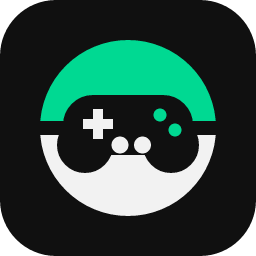
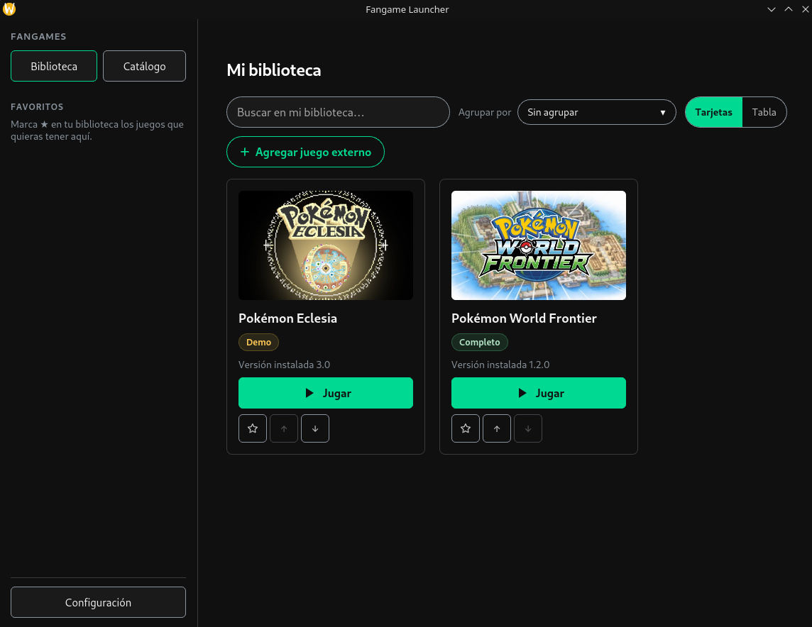
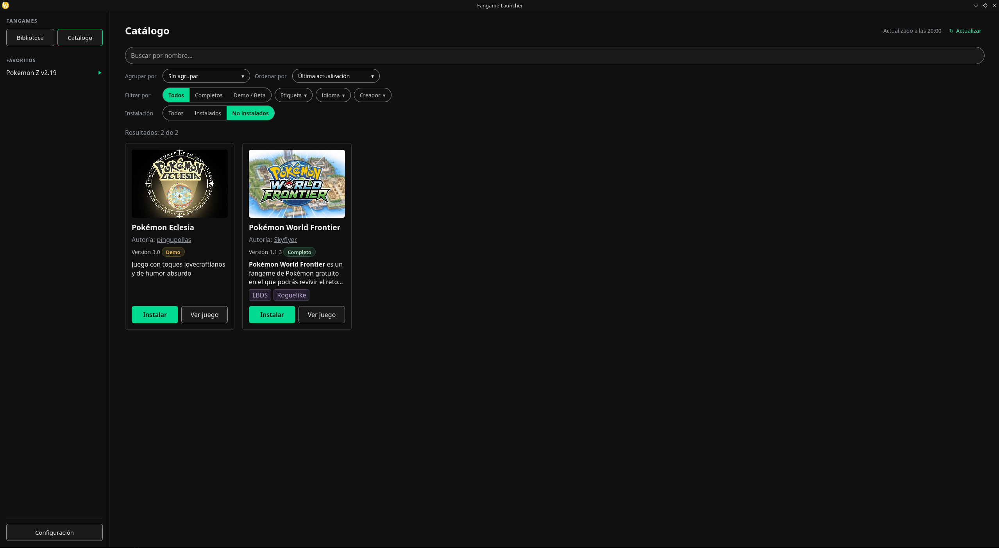
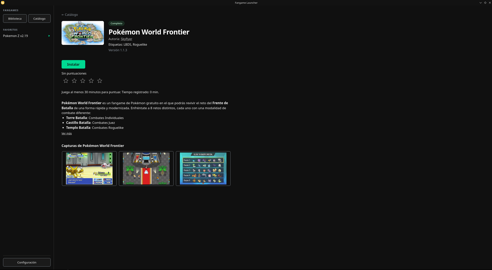
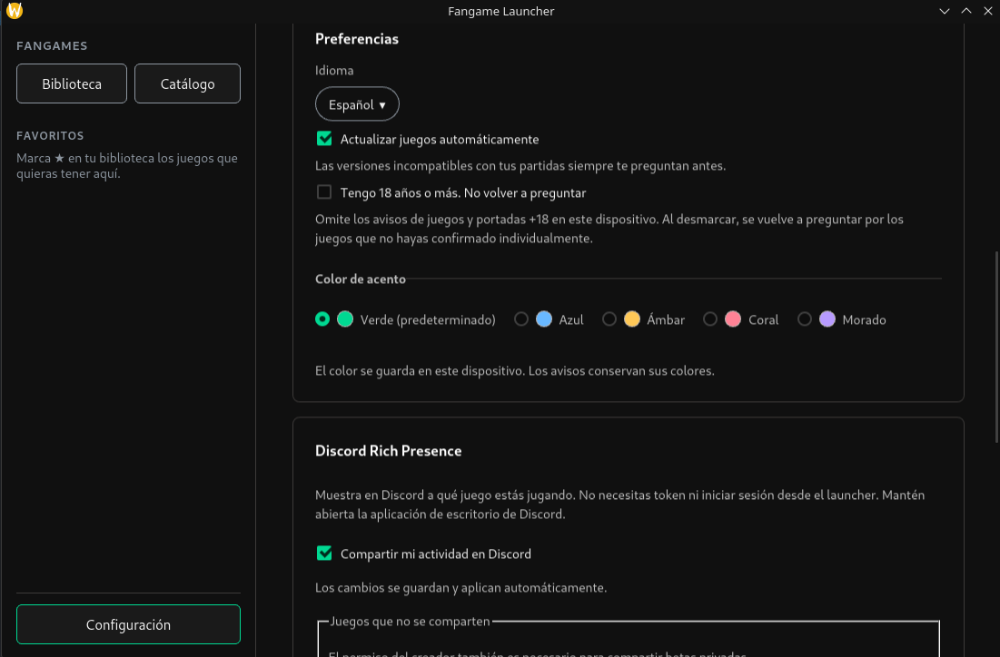
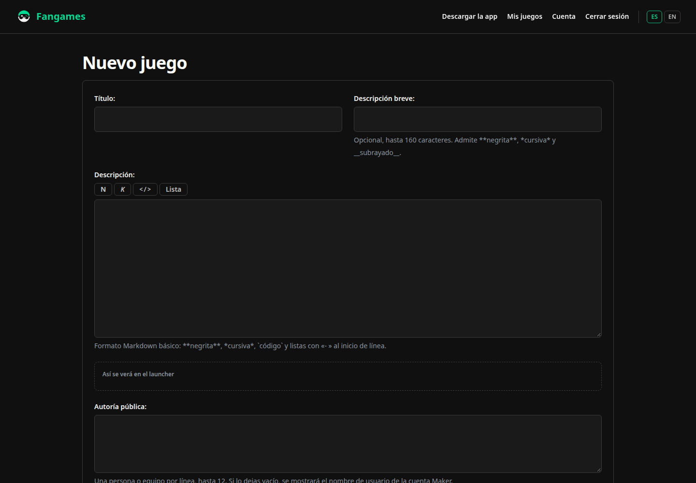
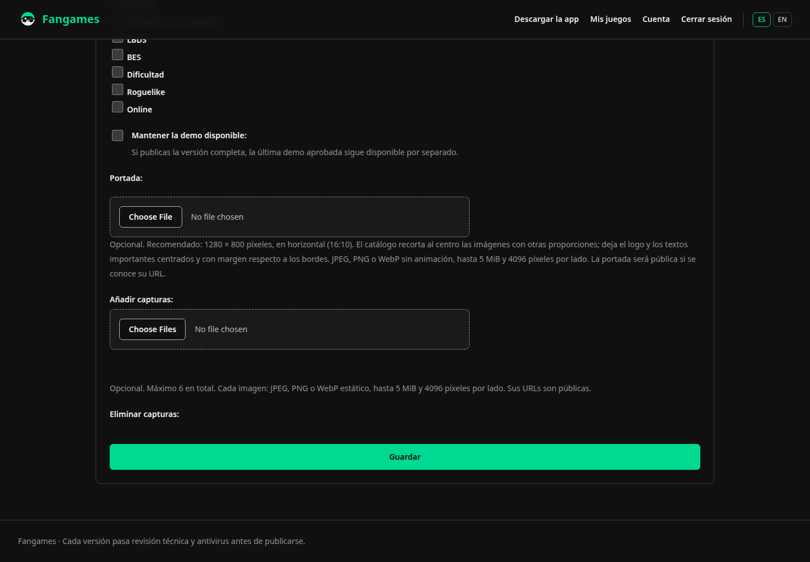

Encuentra tu próximo juego
Busca por nombre, con o sin acentos, y combina filtros por creador, temática, etiqueta y completo o incompleto. Consulta la descripción y amplía las capturas del maker sin salir de la app.

Fangame LauncherPara jugadores y makers de fangames
Descubre fangames, instala sus versiones y organiza tu biblioteca. Gestiona las actualizaciones y las copias de partidas desde el launcher.
Próximamente para Windows, Linux y macOS.

Funciones
Busca por nombre, con o sin acentos, y combina filtros por creador, temática, etiqueta y completo o incompleto. Consulta la descripción y amplía las capturas del maker sin salir de la app.
Descargas verificadas con SHA-256 y versiones en carpetas separadas. Si activas las actualizaciones automáticas, solo se instalan las que cumplen las condiciones de compatibilidad de partidas e idioma.
Abre la carpeta de partidas, consulta y restaura copias, o sincroniza con tu Google Drive de forma opcional. La cobertura depende de la ubicación declarada por el maker y del motor usado para ejecutar el juego.
Accede a los juegos públicos instalados aunque falle el catálogo y personaliza las portadas de tu biblioteca.
Usa las versiones nativas disponibles. En Linux, los juegos de Windows compatibles pueden ejecutarse con Proton-GE; en macOS, con Wine gestionado por el launcher. La compatibilidad depende de cada juego.
Consulta las novedades del launcher desde Configuración y las notas que el maker incluya al actualizar un juego. Refresca el catálogo para ver nuevas publicaciones sin reiniciar.
Capturas de la aplicación
Capturas reales del launcher. Selecciona una imagen para verla a tamaño original.

Busca, ordena y filtra los juegos antes de instalarlos.

Consulta la descripción, la versión y las capturas compartidas por el maker.

Elige tus preferencias y gestiona las opciones de cuenta y sincronización.
Para makers
Gestiona tu juego y sus versiones desde el portal de makers. Programa una publicación, invita a testers a betas privadas y consulta las descargas y actualizaciones por separado, con desglose por versión y sistema.
PróximamenteRegístrate en el portal y verifica tu correo.
Título, descripción, autoría, idiomas, etiquetas, portada y hasta 6 capturas.
Aloja el ZIP de tu build donde prefieras (hasta 4 GB) y pega el enlace por sistema. Indica dónde guarda las partidas tu juego para que el launcher las copie antes de actualizar.
Se valida el ZIP y se analiza con antivirus. Un administrador prueba la build y la aprueba.
La versión aparece cuando está aprobada y ha llegado la fecha que elegiste. Sin fecha programada, se publica al aprobarse. Las betas privadas se comparten con testers concretos.

Escribe la presentación y consulta la vista previa de la descripción.

Añade una portada y hasta seis capturas, con los límites de formato y tamaño indicados en el portal.
Descargar
Las descargas para Windows, Linux y macOS estarán disponibles muy pronto.
x86_64
x86_64 · Steam Deck
Intel · Apple Silicon
Preguntas
Sí. Descargar y usar el launcher es gratis para los jugadores. Para los makers, subir y publicar sus juegos también es gratis.
Dependen de la ubicación de partidas declarada por el maker y de la compatibilidad del motor. En macOS, el launcher utiliza su propio Wine gestionado para ejecutar los juegos de Windows compatibles. Conserva una copia manual antes de cambiar de motor o instalar una versión incompatible.
El launcher elimina la instalación que gestiona. Las partidas externas, los prefijos de compatibilidad y algunas carpetas antiguas pueden conservarse y requerir limpieza manual.
El catálogo, las descargas y las funciones opcionales, como la cuenta de jugador o la sincronización con tu Google Drive, requieren comunicarse con sus servicios. Consulta qué datos utiliza cada función en la política de privacidad.
El portal de makers abrirá próximamente. Vuelve pronto para publicar tu build.